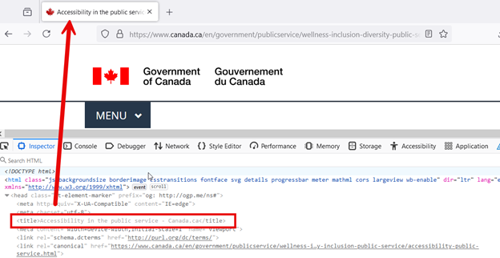
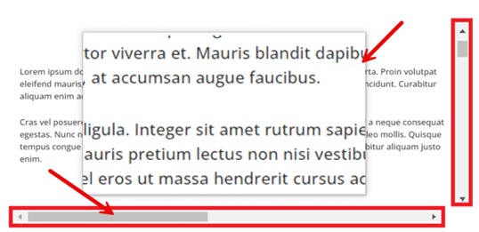
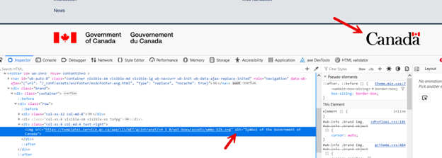
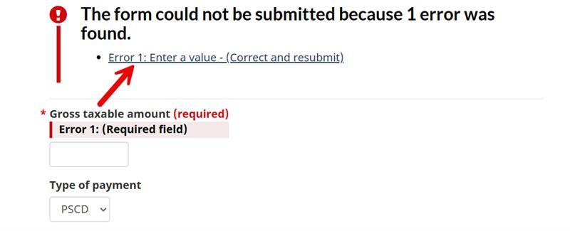

This guide provides ESDC developers with easy steps to spot & fix basic accessibility issues, get ready for the IT accessibility (ITAO) audit,
save time and
reduce rounds of review needed to address acessibility gaps.
General
The page has a title that
describes the page content and purpose.
Ensure the page title is descriptive and provides an accurate summary of the page
content. This can be set using the <title> tag within the
<head> section of your HTML document.

The inspect element window highlights the title tag, which references the title
displayed at the top of the webpage. An arrow points from the
HTML tag to the matching title on the webpage.
Using semantic HTML to mark up the structure of the page and
represent the information, rather than relying on custom CSS.
Check the code to see if correct HTML elements are used to structure the content
based on each element's meaning, and not its appearance. Examples: Headings should
use semantic HTML like <h1> instead of using CSS to style the
text to look like an <h1>, and lists should use semantic list
HTML like <ul> and <ol> instead of using
bullets to style the text to look like a list.
The page has accurate and informative headings that are structured
using <h1> - <h6> heading tags without skipping hierarchical
levels.
A well-structured heading hierarchy using <h1>,
<h2>, and <h3> tags, represented using a tree
view.
Pages remain functional and readable when text is magnified to 200%
of its initial size.
Zoom the page to 200% on a 1280 by 1024 viewport, and make sure that no content or
functionality is lost, or that any text is clipped, truncated, or obscured.
The label text does not fit within the search input field, causing the text to
be truncated.
Page content reflow does not cause loss of content or functionality
and does not require horizontal scrolling when the viewport width is set to
320px.
Use a mobile devices simulator such as Toggle device toolbar in Chrome Dev Tools to verify. Open the developer tools in your browser and use responsive design mode. Set the
viewport width to 320px by narrowing the browser window or by zooming in so that the
viewport width is now 320px. To do this when starting with a 1280px viewport width
at 100% browser zoom, zoom in to 400%. Ensure no text is clipped or content
disappears.

Zoomed-in text with scrollbars highlighted. Arrows point to the horizontal
scrollbar and the zoomed-in content's borders to show the relationship between these
elements.
The primary language of the page is set using lang
attribute and using a standard language code. (e.g. <html lang="en">
or <html lang="fr">).
Identify passages or phrases in a language different from the main language of the
page. Then, check the code to make sure that any changes in language are marked
using the lang attribute.
The lang attribute is highlighted within the inspect element window, showing
that this is an English page with the "en" lang attribute applied.
All text elements and non-text elements have sufficient color
contrast between the foreground and background color.
Text and images of text should have a contrast ratio of at least 4.5:1 between
any text (and images of text) and the background behind the text.
Non-textual elements should have a minimum contrast ratio of 3:1 with adjacent
colours.
A page where a button with a pink background and white text is highlighted. The pink and
white color combination is being tested using a colour contrast analyser tool, with
alerts notifying the user that this combination fails to meet the necessary contrast
ratio.
Inline language changes are marked up and have valid
lang attribute values. (e.g. lang="en" or
lang="fr").
Identify passages or phrases in a language different from the main language of the
page. Then, check the code to make sure that any changes in language are marked
using the lang attribute.
An inspect element view showing a lang attribute applied to a specific tag,
differentiating it from the main language of the webpage. The lang
attribute is
highlighted in red, with an arrow pointing to the corresponding text associated with
this tag on the webpage.
The purpose of each link can be understandable from the link
text.
Check to see if link labels give a clearer idea of what user can expect to find by
clicking on the link.
Two examples of hyperlink text, with one example labelled accessible (“Read more
about Tax Calculation”) and the other inaccessible (“Read more”). The link tag for each
has been highlighted in the inspect element window.
Keyboard
The navigation order of focusable elements (e.g., links, form elements, modal dialogs, etc.)
is logical and intuitive, preserving the meaning and operability of the content.
Navigate through the page using Tab or Shift + Tab to ensure that the tabbing order makes
sense according to the content on the webpage. Best practices recommend that the tab order
follows the reading order of the webpage for improved accessibility.
Instructions on structuring the tab order of a webpage. Two examples are presented: one
demonstrating an accessible and logical tab sequence, and the other showcasing an
inaccessible, disorganized sequence.
All focusable elements show a visual focus indicator when in focus
and do not disappear while tabbing.
Navigate through the page using Tab or Shift + Tab to ensure that focusable elements
have a clear, visible indicator that identifies visual focus.
Two examples of buttons demonstrating a principle of accessibility. The first
example shows a button where the focus is visible when focused, making it
accessible. In the second example, the focus is not visible, making the button
inaccessible.
The page has a keyboard-accessible method to bypass repetitive
content.
Using the keyboard keys, check if there is a list of links to skip blocks of repeated
material.
Example: The first interactive item on the page is a link (titled Skip to Main
Content) to the beginning of the main content. Activating the link sets focus to the
main content.
A tag link highlighted in the inspect element window with an arrow pointing to
the top of the webpage, indicating the corresponding “Skip to main content” link which
enables users to skip to the main content.
Keyboard access and control are available for all interactive
components that have mouse access and control.
Ensure that all elements such as links, form fields, buttons, and media player
controls are accessible and operable using only the keyboard keys.
Use the Tab key to navigate in a linear direction through focusable
elements like links, form controls, and buttons.
Use the Enter key (and sometimes Space) to select an element.
Use the Arrow keys to move within certain elements, element groups, and widgets, such as
form select elements, radio button groups, and sets of tabs.
A user interface displaying multiple elements such as selectable fields, buttons, and
links, with arrows indicating the tabbing sequence between elements.
Images and Multimedia
Informative images have a text alternative that serves the
equivalent purpose.
Check the code to see if the image has alt attribute and ensure its
value contains appropriate alternative text that describes the purpose of the image
in a way that adequately substitutes for the image.

Within the inspect element window, an arrow points to the alternative text of an image,
describing a symbol of the Govermenet of Canada. This demonstrates how alternative text
provides a brief
and meaningful description of the image for accessibility.
Decorative images are coded in such a way that screen readers can
ignore them.
Check the code to see if the image has alt attribute and ensure the
value is empty (alt="").
The inspect element window displaying HTML code for three decorative images. The
sections of code demonstrating that each image’s alt text is empty have been highlighted
in green.
Pre-recorded multimedia (video) content has captions.
Look to see if captions are available for both video and audio content, either
through open captions (captions that are always on and that cannot be turned off) or
closed captions (look for a closed captions button or a way to turn on captions).
A screencapture of a video displaying captions that correspond to the host's
speech. Displayed within the video is an image of the 'Job Bank Canada' website
Forms
All form elements (e.g. text fields, checkboxes, radio buttons,
drop-down menus etc.) have descriptive and meaningful labels.
A form page with the inspect element window to its right. Arrows point to each
descriptive label field.
Labels or instructions are provided when content requires user
input.
Check the code to see if any fields are marked as required. If an asterisk (*) symbol
is used to indicate a required form field, instructions must also be provided to
define the meaning of the symbol at the top of the form.
A form legend with a label indicating that the fields are required.
Error messages clearly identify where the issue occurred (e.g.,
field name) and what needs to be corrected.
Check to see if error messages are easy to understand and provide clear instructions
on how they can be resolved.
Example: "Please enter your name" is not as helpful as "Please enter your first
name".

An arrow pointing to an error message indicating that a field cannot be left
empty and instructing the user to enter a value. The error text above the input field is
highlighted in red.